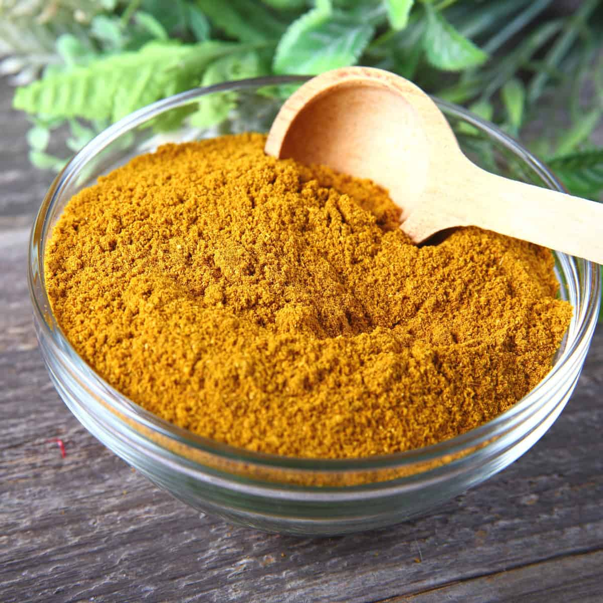

Ingredients
- 3 tablespoons turmeric
- 3 tablespoons ground coriander
- 1 tablespoon + 1/2 teaspoon ground cumin
- 1 1/2 teaspoons garlic powder
- 3/4 teaspoon cinnamon
- 3/4 teaspoon cayenne
- 3/4 teaspoon ground ginger
- 1/4 teaspoon + 1/8 teaspoon ground nutmeg
- 1 1/2 teaspoons ground black pepper
- optional: good pinch of ground cloves
Broth & Base
Preparation
Add all of the spices to a bowl, whisk very very well or optionally, blend in a food processor to ensure good even mixing. Add to a jar and store in your pantry. This will keep for 6 months.